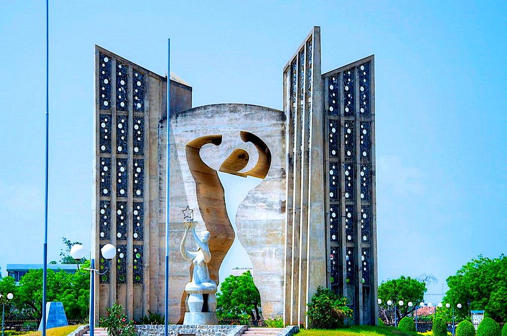

Le Togo, autrefois colonie française a œuvré à l’instar d’autres pays africains, pour son accession à la souveraineté internationale. Les luttes menées par ses fils ont permis au pays d’acquérir son autonomie politique. C’est ainsi que des infrastructures ont été érigées pour rendre mémorable cette liberté politique. Au nombre de celles-ci, le monument de l’indépendance.
ce monument a été élevé pour commémorer solennellement l’indépendance du Togo. L’indépendance,
officiellement a été proclamée le 27 avril 1960, mais en réalité elle a été acquise deux ans plus
tôt, le 27 avril 1958.En effet au cours d’une élection législative et référendaire le 27 avril 1958
supervisée par l´Organisation des nations unies (ONU), il a été demandé aux Togolais de se prononcer
sur la continuité de la tutelle de l´ONU sur le Togo et sur la présence de la France en tant que pays
mandataire sur le Togo.
Les partis politiques qui ont mené campagne contre la présence de la France et la continuité de la tutelle
de l’ONU étaient le CUT et la JUVENTO. Les deux coalitions étaient dirigées par le président Sylvanus Olympio.
Cette coalition a remporté les élections, le peuple ayant voté majoritairement pour elle, et dit oui au départ
de la France et à la fin de la tutelle de l’ONU.
Une fois l’indépendance acquise de fait, il fallait préparer le pays pour l’accueillir solennellement. Il fallait
également réaliser un certain nombre de textes, de lois et construire des infrastructures pour recevoir dignement
l’indépendance. Sylvanus Olympio en tant que leader d’un parti d’opposition ou d’un parti nationaliste coalisé a
demandé une prolongation de deux ans.Du 27 avril 1958, l’indépendance a été proclamée le 27 avril 1960.
Durant ces 2 ans, le monument de l’indépendance a été construit. Il est l’œuvre de Georges Coustère, un artiste
chevronné qui était venu de la France. Il était assisté par un autre artiste togolais, Paul Ahyi.
Lire la suite....